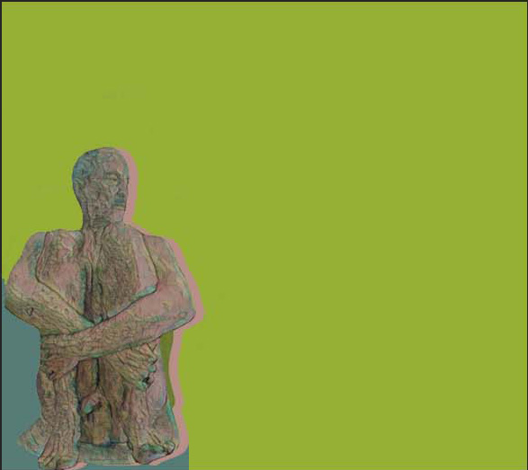
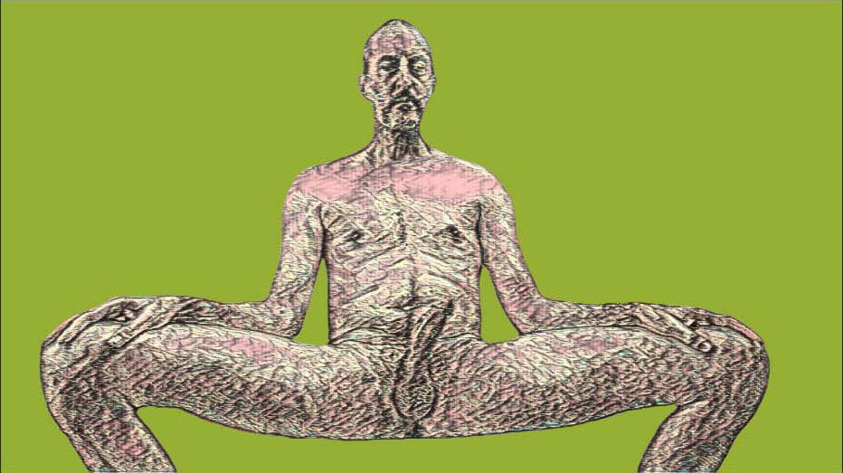
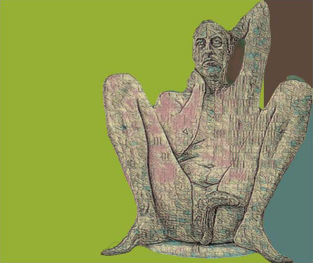
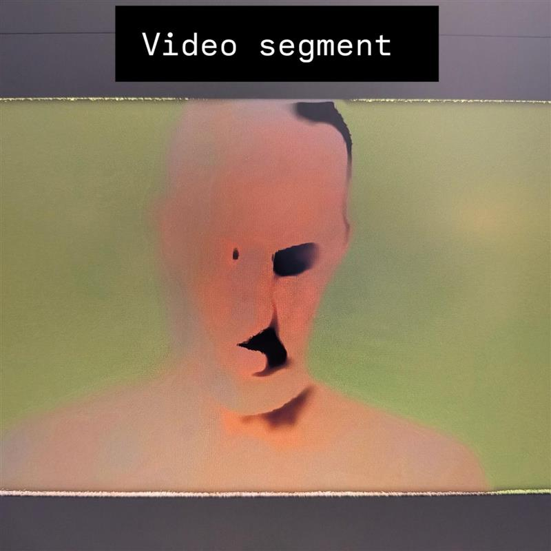
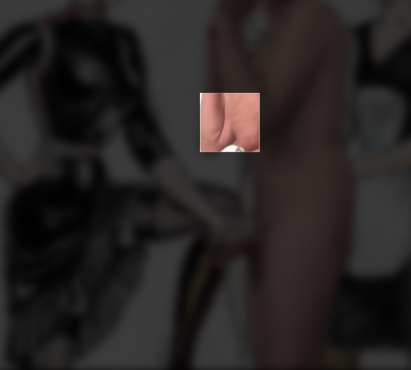
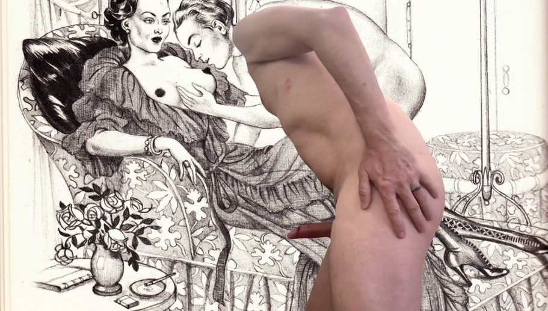

The first state is not rest. The figure has contracted into itself — the anticipatory stillness of a body that knows what being seen costs and has not yet decided to pay it.

The body at maximum exposure and maximum composure simultaneously. Fully frontal, nothing deflected. Power is not performed here. It is structural.

The third state is not conclusion but arrival. Open, meditative, complete. The ground that was hostile is now simply a field the body inhabits.

The odalisque inverted. The figure is male. The gaze that produces the image is female. The glasses insist on a particular Tuesday afternoon — not the eternal nude but the actual person, on an ordinary day.

A protocol governs transmission between systems. Applied to the pose: the conventions of display become legible as a transmission standard, instructions for how the body should present itself to the gaze that receives it.

The assembly of components that holds a body in position under force. The gaze is always also a form of constraint. To be rendered is to be held in place long enough to be seen.

The Roman concept of private leisure — slightly idle, slightly shameless. A close-up so extreme the body becomes terrain: heat map, the skin read as geological surface. The body at its most private.

The body as territory: claimed, mapped, re-inscribed. The digital process runs the body through a cartographic procedure. The female gaze performs the survey. The canvas holds the resulting map.

The glitch is not an error. It is the moment the system exceeds its own architecture — the instant when the body refuses smooth representation and something involuntary breaks through. The male body in orgasm, AI-processed into abstraction. The face dissolves. Features collapse into voids. The body refuses to be possessed by the gaze even as it is being watched. Witnessed by no one. Witnessed by anyone who stands in front of it.

The secret room. The full image is present and entirely unavailable: a blurred projection of the male nude, inaccessible. The eye-tracker reads the viewer's gaze vector in real time and opens an 80-pixel window of clarity at the exact point of attention. Everywhere else: blur. The desire to see produces the image. The viewer becomes aware of their own looking in the act of looking. The 80-pixel window never accumulates into a whole — each fixation reveals a fragment, and the rest remains blur. What the viewer carries away is not the image but the supposition of the image: fragments assembled into a presumed whole — coherent, intentional, complete — yet never verified, only supposed. And desire, meaning, and authority keep circling that same incompleteness, each pass presuming the gap closed, never closing it. The chamber closes when the viewer leaves.


